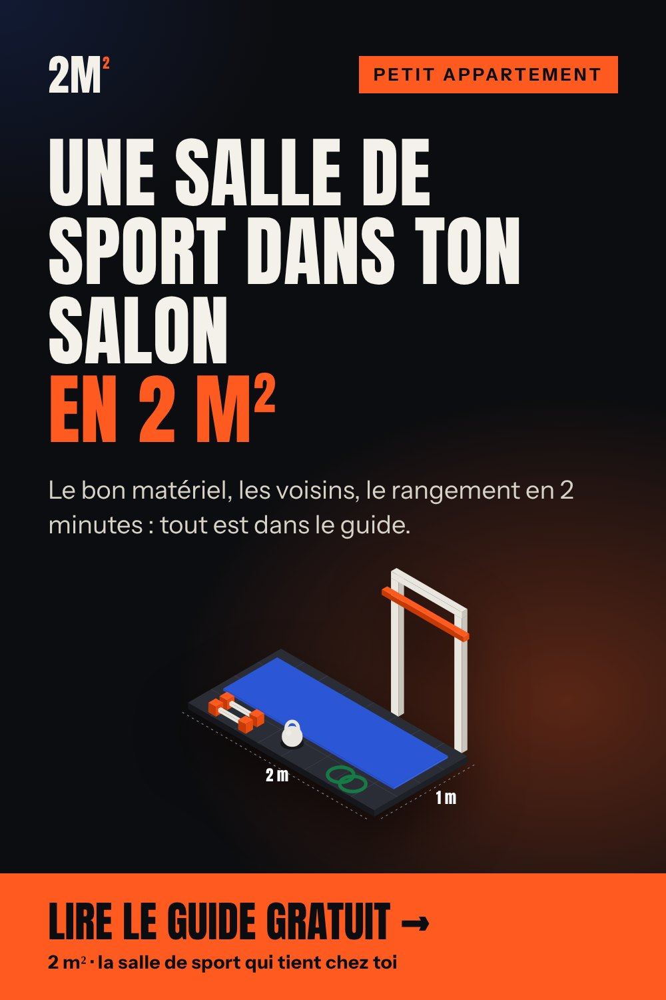

Pas besoin d'une pièce dédiée. Une zone libre de 2 mètres sur 1 mètre suffit pour un entraînement complet : c'est la taille d'un tapis de sol, plus un peu de marge pour bouger les bras.
Les 2 m² qu'il te faut
Mesure l'espace réellement libre, une fois la table basse poussée ou le fauteuil décalé. Il te faut :
- 200 cm de long pour t'allonger sur le tapis, bras tendus au-dessus de la tête ;
- 100 cm de large pour les pompes, les fentes et le gainage ;
- une porte solide si tu veux ajouter une barre de traction (elle ne prend rien au sol) ;
- environ 2,40 m sous plafond pour la corde à sauter. Sinon, remplace-la par des montées de genoux.
Le matériel, dans l'ordre
Achète en trois temps. Chaque étape permet déjà de s'entraîner, et tu sauras si tu tiens le rythme avant de dépenser plus.
| Étape | Matériel | Emprise au sol | Ce que ça débloque |
|---|---|---|---|
| 1 | Tapis + élastiques | ≈ 183 × 61 cm | Gainage, pompes, tirage, jambes |
| 2 | Haltères réglables | ≈ 45 × 40 cm | Vraie progression en force |
| 3 | Barre de traction, kettlebell | ≈ 22 × 22 cm | Dos complet, cardio-force |
Les voisins et le bruit
En appartement, le bruit vient surtout des chocs : sauts, haltères qu'on pose trop fort. Trois règles suffisent :
- pose toujours les poids sur le tapis, jamais directement sur le sol ;
- remplace les sauts par des variantes sans impact (squats lents, montées de genoux) aux heures calmes ;
- pour la corde à sauter, saute bas, sur l'avant du pied, sur un tapis épais.
Tout ranger en 2 minutes
Un coin d'entraînement qu'on doit ranger pendant dix minutes finit par ne plus servir. Vise un rangement en deux gestes : le tapis roulé debout dans un angle, et le reste dans une seule caisse ou sous le lit. Les haltères réglables sont faits pour ça : une paire au lieu d'une rangée de poids.

Complète ton coin sport
Ces objets vont bien avec ce que tu viens de lire, et ajoutent de nouveaux exercices.
Questions fréquentes
Quelle surface faut-il pour faire du sport chez soi ?
Une zone libre d'environ 2 mètres sur 1 mètre suffit pour un entraînement complet au poids du corps et avec des haltères.
Comment faire du sport en appartement sans déranger les voisins ?
Pose les poids sur un tapis épais, évite les sauts aux heures calmes et préfère des variantes sans impact.
Par quoi commencer pour s'équiper à la maison ?
Un tapis de sol et un lot d'élastiques. Ensuite des haltères réglables, puis une barre de traction de porte.